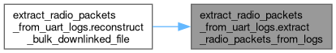
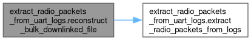

Functions | |
| list[bytes] | extract_radio_packets_from_logs (int packet_type, Path log_file_path) |
| None | reconstruct_bulk_downlinked_file (Path log_file_path, Path output_file_path) |
Variables | |
| log_file_path = Path(sys.argv[1]) | |
| output_file_path = Path(sys.argv[2]) | |
Function Documentation
◆ extract_radio_packets_from_logs()
| list[bytes] extract_radio_packets_from_uart_logs.extract_radio_packets_from_logs | ( | int | packet_type, |
| Path | log_file_path ) |
Extracts radio packets from the log file.
Args:
packet_type: The number of packets to extract.
log_file_path: Path to the log file.
Returns:
A list of bytes representing the extracted radio packets.
Here is the caller graph for this function:

◆ reconstruct_bulk_downlinked_file()
| None extract_radio_packets_from_uart_logs.reconstruct_bulk_downlinked_file | ( | Path | log_file_path, |
| Path | output_file_path ) |
Reconstructs a bulk downlinked file from the log file.
Args:
log_file_path: Path to the log file.
output_file_path: Path to save the reconstructed file.
Here is the call graph for this function:

Variable Documentation
◆ log_file_path
| extract_radio_packets_from_uart_logs.log_file_path = Path(sys.argv[1]) |
◆ output_file_path
| extract_radio_packets_from_uart_logs.output_file_path = Path(sys.argv[2]) |
Generated by